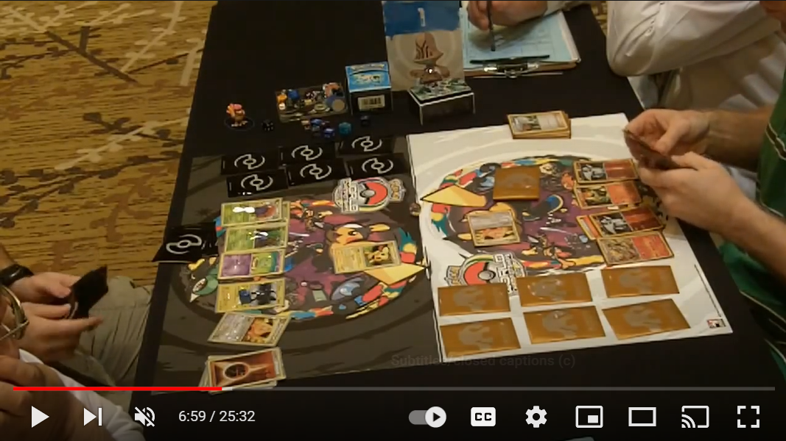
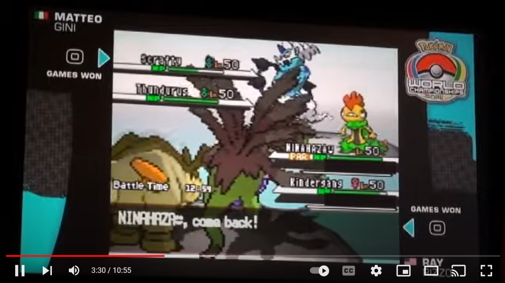
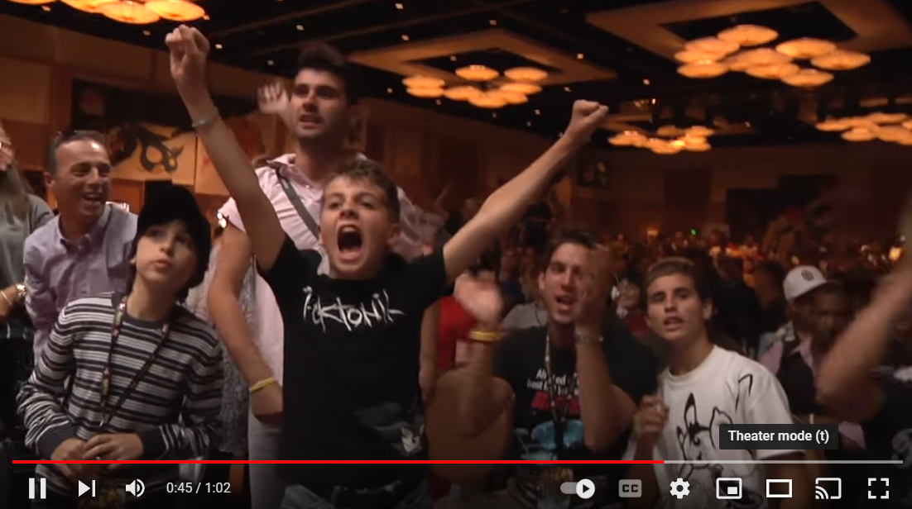

2011 Worlds - Masters Finals

Ross Cawthon (The Truth) vs David Cohen (MagneBoar) in the Finals of the 2011 World Championships.
Watch Game 1 Watch Game 2 Watch Game 32011 Worlds - Masters Top 4
Ross Cawthon (The Truth) vs Tom Dolezal (Reshiphlosion) in Top 4 of the 2011 World Championships.
Watch Game 1 Watch Game 22011 Worlds - VGC Finals
Here's a recording of the VGC Master's Finals, commentated by the legendary Nick McCord, talking over the games like in the Pokemon Stadium games on the N64.
2011 Worlds - Recap
Here's an officail recap video by Pokemon from the event.
2011 Worlds - News Coverage

Here's a short news-like report on the event.